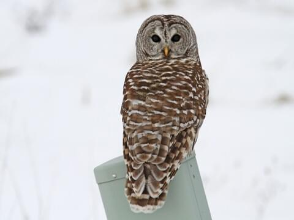

Barred Owl
The barred owl, also known as the northern barred owl, striped owl or, more informally, hoot owl, is a North American large species of owl. A member of the true owl family, Strigidae, they belong to the genus Strix, which is also the origin of the family's name under Linnaean taxonomy.
